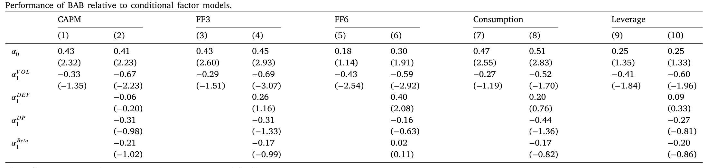
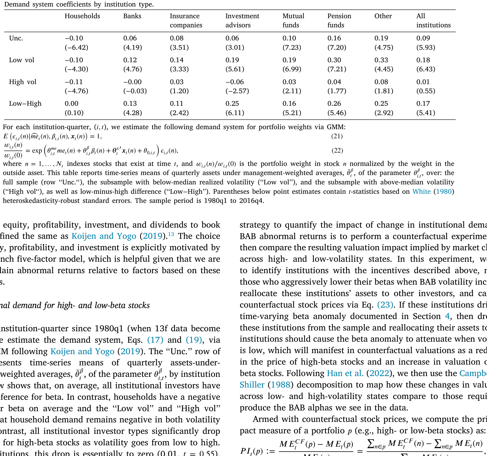
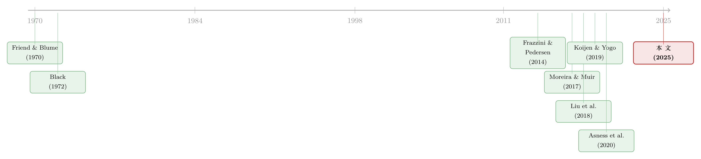

波动率之谜，藏在 beta 异象的「时机」里
本文读的是 Barroso, Detzel & Maio (2025, Journal of Financial Economics)：五十年来解释「低 beta 跑赢」这一异象的六大理论，没有一个能解释它的条件表现——「押注低 beta」(betting-against-beta, BAB) 的超额收益恰恰在低波动时最丰厚、最反常。作者用 Koijen-Yogo 需求体系给出了一个机构层面的答案：当波动率上升，受考核激励驱动的机构会把仓位从高 beta 股票撤向低 beta 股票，这一价格冲击足以解释全部的「条件 alpha」。
1 引言：一个「反过来」的谜
资产定价里最古老、也最让人不安的一个事实是这样的：按照 Sharpe (1964) 和 Lintner (1965) 的 资本资产定价模型 (capital asset pricing model, CAPM)，承担更多市场风险（更高的 beta）理应换来更高的预期收益。可数据偏偏不听话——低 beta 的股票，反而赚到了相对 CAPM 为正的异常收益 (abnormal return)；高 beta 的股票则正好相反。这个「beta 异象」(beta anomaly) 至少可以追溯到 Friend and Blume (1970) 和 Black et al. (1972)，半个世纪过去，它依然稳健，成因却仍在激烈争论，没有一个被普遍接受的答案。
按理说，一个活了五十年、被无数顶刊文章研究过的异象，解释应该越攒越多、越攒越细才对。可怪就怪在这里：针对它的主流理论——杠杆约束、缺失的风险因子、套利限制、博彩偏好、投资者情绪、分析师分歧——机制天差地别，却无一例外都能「解释」BAB 的无条件 (unconditional) 收益。一个异象，六把钥匙都能开同一把锁，这本身就很可疑。
正如 Nagel and Singleton (2011) 早就提醒过的：利用异象表现的条件变化，比只看无条件均值有更强的统计功效，可以把那些「碰巧通过了无条件检验」的错误解释筛掉。
这正是本文的切入点。作者不去问「BAB 平均赚不赚钱」，而是问一个更尖锐的问题：BAB 什么时候赚钱？ 答案出人意料——BAB 的夏普比 (Sharpe ratio) 和 alpha，在低波动的月份之后显著更高，在高波动月份之后反而塌掉。也就是说，低 beta 股票表现最「反常」的时刻，恰恰是它们承担风险最少的时候。
这就把所有解释逼到了墙角。下面我们一步步看，这堵墙是怎么砌起来的。
2 先把异象「调一调速」：波动率管理的 BAB
故事得从一个简单的实验开始。沿着 Moreira and Muir (2017) 和 Barroso and Santa-Clara (2015) 的思路，作者构造了一个「波动率管理」(volatility-managed) 版本的 BAB：上个月波动越低，这个月就加越多杠杆。
$$BAB^{\sigma}_{t+1} = \left(\frac{c}{\hat{\sigma}_t}\right) BAB_{t+1}$$
其中 \(\hat{\sigma}_t\) 是用上个月最后 21 个交易日的 BAB 日收益算出来的已实现波动率：
$$\hat{\sigma}_t = \sqrt{\sum_{d=1}^{21} BAB_{d,t}^2}$$
这里的标量 \(c\) 是任意的，只是为了让管理后与管理前的标准差相等，不影响任何统计推断。
结果如表 1（论文中）所示：管理前的 BAB 月均超额收益 0.45%、夏普比 0.34；而 \(BAB^{\sigma}\) 在标准差完全相同的前提下，月均收益拉高到 0.67%（高出约 50%），夏普比升到 0.50，两者之差在统计上显著（Jobson-Korkie 检验 t = 2.23）。顺带一提，波动率管理还把偏度 (skewness) 从 −0.91 翻成 +0.01，超额峰度从 8.06 压到 3.68——尾部风险也变好看了。
这个改善有多了不起？Cederburg et al. (2020) 检验了 103 个管理后因子，只有 8 个的夏普比显著高于其未管理的原版。BAB 是其中之一。
\(BAB^{\sigma}\) 赚得比 BAB 多，等价于说一句话：当 BAB 的波动率下降时，它的夏普比会上升。这句看似无害的描述，恰恰是后面整篇文章的「炸药包」。
3 为什么这是个「谜」：定价核与条件夏普比
接着，一个自然的问题是：「低波动 → 高夏普」这件事，为什么算「谜」？它不是挺好的吗？
要看清这一点，得退回到资产定价最干净的框架。假设不存在套利机会，资产由一个 随机贴现因子 (stochastic discount factor, SDF) \(M_t\) 定价。Cochrane (2005) 的标准结论是：经济体中的最大夏普比等于 \(\sigma_t(M_{t+1})/E_t(M_{t+1})\)。在此之上，BAB 的条件夏普比可以写成：
这条恒等式把「BAB 的夏普比为什么会动」彻底拆开了。要让 BAB 的夏普比在低波动时上升，从右边看，只有两种可能：要么 BAB 在低波动时更强地暴露于被定价的风险（即 \(-\rho_t\) 变大），要么整个经济体的最大夏普比在低波动时变高。
可问题在于，这两件事都反直觉。波动率在各因子之间是高度共动的；按常理，投资者应该在波动上升时要求更高的风险补偿，最大夏普比理应随波动上升而上升，而不是下降。换句话说，如果 BAB 的高收益是「风险补偿」，那它就该在高波动时最丰厚——可数据恰恰相反。
那会不会是 错误定价 (mispricing)？也讲不通。如果 BAB 在低波动时赚得多是因为定价错误，那意味着套利风险在低波动时反而更大——而我们通常认为套利风险是随波动正向变化的。
于是张力就立住了：无论你站在「风险」还是「错误定价」哪一边，「低波动 → 高夏普」都说不通。这就是标题里的「波动率之谜」。
4 六把钥匙，逐一被证伪
然后，真正的工作开始了：把六种主流解释一个个拉来，看它们能不能解释这个条件表现。这里的关键武器，是作者构造 BAB 的方式——他们沿用 Liu et al. (2018) 的估计法，用过去 60 个月（最少 36 个月）做带 Dimson (1979) 修正的 CAPM 回归得到 beta，再做收缩，最后用「直接对冲」市场暴露的方式定义因子：
$$BAB_t = r_{L,t} - r_{H,t} - (\beta_{L,t-1} - \beta_{H,t-1})\,MKT_t$$
这个对冲把 BAB 的事后市场 beta 压到了微不足道的 −0.02（t = −0.31），保证了后面所有结论不是被市场暴露污染出来的。
第一把：杠杆约束。 Black (1972) 与 Frazzini and Pedersen (2014) 认为，受借贷约束、风险厌恶又低的投资者会去抢高 beta 股票，把价格抬高、收益压低。这套理论确实能解释 BAB 的无条件收益，Adrian et al. (2014)、Jylhä (2018) 等也都找到了支持的代理变量。但作者做了一件前人没做的事：把这个均衡模型校准出不同的 BAB 波动水平，看它对「波动—后续表现」的预测。结果是——模型反过来预测：BAB 和市场组合的夏普比都应随各自波动率上升而上升，与数据完全相反。根子出在模型的一个核心假设：所有投资者都风险厌恶，因而都要求正的风险—收益权衡 (Merton, 1973)。
第二把：缺失的风险因子。 Novy-Marx and Velikov (2022) 指出 Fama and French (2018) 的六因子模型 (FF6) 能给 BAB 定价，因为低 beta 股票在盈利、投资、动量上很像那些「好因子」。作者复现了这一点——但随即发现 FF6 也栽在条件表现上：当滞后波动「低」（低于中位数）时，BAB 的夏普比翻了一倍多，而那些本来能解释 BAB 的因子载荷却大幅缩水甚至变号，留下一个比高波动期高出整整 1 个百分点/月的正 alpha。这个失败同样延伸到 CAPM、Fama-French (1993) 三因子，以及基于 Kroencke (2017) 「未过滤消费」和 Adrian et al. (2014) 中介杠杆的因子模型。

Table 4
第三把：套利限制 / IVOL。 Liu et al. (2018) 把 beta 异象归因于 beta 与 特质波动率 (idiosyncratic volatility, IVOL) 的强横截面相关，沿用 Stambaugh et al. (2015) 的套利风险逻辑。作者据此造了三个新 BAB：剔除高 IVOL 的「高估」股、用对 IVOL 正交化的 beta、用对错误定价正交化的 beta。三者的无条件 alpha 都不显著——但一旦分状态，alpha 在低波动时为正、高波动时为负，两态之差 0.8 到 1.0 个百分点/月，夏普比从高到低波动上升 0.5 到 0.7。套利限制，出局。
注意这里的「证伪」逻辑：这些理论并非全错，它们确实能解释 BAB 的平均收益。作者的论点更狠——它们解释不了时机。一个真正的成因，必须同时匹配异象在时间序列上的变化（Cochrane, 2011）。
第四把：博彩偏好。 Bali et al. (2011, 2017) 认为投资者对「彩票型」股票的需求抬高了高风险股价。同样地，把 beta 对博彩需求正交化后，新 BAB 在低波动态的夏普比和 alpha 依然显著高于高波动态。
第五、六把：情绪与分歧。 Antoniou et al. (2016) 说 beta 异象只在高情绪月显著；Hong and Sraer (2016) 的「投机型 beta」说它只在分析师分歧高时显著。但作者发现，无论情绪或分歧处于什么水平，「BAB 的 alpha 与滞后波动负相关」这一关系都成立。
于是六把钥匙全部落空。五十年、无数顶刊，竟没能凑出一个能解释这个异象条件表现的理论。
（关于「同样的下跌为何在平静市更痛」这种条件风险的直觉，可参见《定价核的两副面孔：为什么同样跌 10%，在「平静市」里更让人心痛？》；而把「波动率之谜」理解成一道预测题的视角，可参见《"波动率之谜"其实是一道预测题：当鞅模型预报失灵》。）
5 真正关键的一步：机构在波动里「换仓」
但真正关键的一步，不在于再证伪一个理论，而在于给出一个能成立的答案。
逻辑上，要让 BAB 的 alpha 与滞后波动负相关，就必须有这样一个事实：当 BAB 的波动上升，高 beta 股票相对低 beta 股票变得「没那么被高估」了。 谁在干这件事？作者把目光转向机构投资者的交易，用 Koijen and Yogo (2019) 的 需求体系 (demand system) 来估计。
估计结果很说明问题：平均而言，机构投资者显著偏好高 beta 股票。但是——从低波动月走到高波动月，这个偏好衰减到几乎为零，且不再显著；与此同时，所谓「家庭」(household) 投资者则始终偏好低 beta 股票，与波动无关。换句话说，波动一上来，机构就悄悄把仓位从高 beta 撤向了低 beta。
为什么机构会这么做？作者援引了一条新兴文献：业绩考核合约激励基金经理超配高 beta 股票——因为平均而言高 beta 的高收益能跑赢像 S&P 500 这样的单位 beta 基准，即便它们的 alpha 是负的 (Baker et al., 2011；Christoffersen and Simutin, 2017)。可同样的考核也惩罚 跟踪误差 (tracking error)，于是当 BAB 波动上升、持仓风险变大，经理就有动机「向基准撤退」——卖出高 beta、买入低 beta。Ellul et al. (2022) 记录的寿险公司「逐收益率」也是同一逻辑的不同面孔。

Table 9
最关键的，是一个反事实实验 (counterfactual)。作者剔除掉那 10% 的机构资产——具体是那些「波动上升时最倾向于降低组合 beta」的机构——再把它们的资产重新分配给其余投资者。结果，低 beta 股票相对高 beta 股票平均升值 4.2 个百分点；在 BAB 低波动时升值 8.4 个百分点，高波动时只有 1.5 个百分点。两态之差 6.9 个百分点——用 Campbell and Shiller (1988) 分解、沿 Han et al. (2022) 的方法折算，这个价格冲击足以完全抹平 BAB 的条件 alpha。
于是反转出现了：不需要任何新的「玄学风险」，也不需要重新发明一个理论。机构在波动里的需求动态——这个被前五十年文献忽略掉的时间序列维度——本身就能把 beta 异象相对波动的全部时变性解释干净。
（这种「谁在持有、谁在买卖，决定了价格」的需求侧视角，正与《谁在持有这张债券，决定了它的价格》和《你卖出时，谁还在场？——把「需求分歧」写进资产定价》一脉相承。）
6 文献脉络
把这条线捋一捋，会看到一个很「资产定价」的故事弧线。
最早，Friend and Blume (1970) 和 Black et al. (1972) 在数据里撞见了「证券市场线太平」这件怪事；Black (1972) 立刻给出第一个理论——借贷约束。半个世纪后，Frazzini and Pedersen (2014) 把它系统化成 BAB 因子，引爆了整条「低风险异象」的现代文献。随后解释纷至沓来：Bali et al. (2011, 2017) 的博彩偏好、Hong and Sraer (2016) 的投机型 beta、Liu et al. (2018) 的 IVOL/套利限制，直到 Asness et al. (2020) 试图同时检验多个理论、得出「多种机制共同作用」的结论。
但所有这些都停在无条件层面。与此同时，另一条看似无关的线在生长：Moreira and Muir (2017) 的波动率管理证明了因子表现存在强烈的时变性；而 Koijen and Yogo (2019) 给了我们一把直接撬动「需求」的工具。本文站在这两条线的交汇处——用波动率管理暴露出异象的条件结构，再用需求体系给出机构层面的成因。它与 Asness et al. (2020) 的对照尤为鲜明：后者着眼横截面、得出「多理论并存」；本文着眼时间序列、得出「无一理论成立」。

7 评论与延伸（Q&A + 研究方向）
(a) 几个可能的疑问
Q：这和 Asness et al. (2020) 同样在「检验低风险异象的理论」，区别到底在哪？
区别在维度。Asness 等人比较的是各理论解释 BAB 无条件收益的能力，结论是多个机制都有贡献；本文比较的是它们解释 BAB 条件（随滞后波动而变）表现的能力，结论是没有一个站得住。同一个异象，换一个提问角度，结论几乎相反——这正说明「不要忽略条件信息」有多重要。
Q：「低波动 → 高夏普」会不会只是波动率管理这个特定构造的副产品？
不是。波动率管理只是把这件事翻译成一个可比较的夏普比差异（表 1）。更根本的证据来自分状态回归：把样本按滞后波动中位数切成两半，低波动半边的 alpha 系统性更高、因子载荷系统性缩水甚至变号。\(BAB^{\sigma}\) 也刻意避开了 Liu et al. (2019) 记录的后见之明偏差，并不用极端的「按方差缩放」。
Q：剔除 10% 的机构资产，这个阈值是不是挑出来的？
这是本文识别上最该追问的地方。作者剔除的不是随机 10%，而是「波动上升时最倾向降 beta」的那 10%，再把资产按需求体系重新配置、让价格出清。结论对机制是稳健的——只要存在一批受考核激励、顺周期降 beta 的机构，价格效应的方向就确定；但
6.9个百分点这个具体量级对阈值和重配置假设有多敏感，是读者有理由保留疑虑的。
Q：杠杆约束理论被「证伪」了，是不是说 Frazzini-Pedersen 错了？
不能这么说。它解释 BAB 的平均收益依然有力，大量代理变量预测 BAB 收益的证据也是真的。本文的批评很精准：该模型有一个未被前人检验的副推论——BAB 和市场的夏普比应随波动上升，而这与数据相反。根子是「所有投资者都风险厌恶、都要正的风险—收益权衡」这一假设。要救它，得引入对波动反应不对称的投资者。
Q：为什么是机构在「买高卖低」，而不是反过来？需求体系怎么保证因果方向？
需求体系本身是估计「给定特征（含 beta），各类投资者持有多少」的弹性结构，它刻画的是相关而非自然实验意义上的因果。本文的说服力来自三块拼图的一致性：机构对 beta 的偏好随波动衰减到零、家庭始终偏好低 beta、以及把机构需求动态喂进价格方程后能定量抹平条件 alpha。但严格的外生冲击（比如基准规则的外生变化）仍是缺口。
Q：这对「防御型股票」(defensive equity) 这类产品意味着什么？
意味着它们的超额收益高度择时——在低波动期最肥、高波动期最瘦。Novy-Marx and Velikov (2022) 所说的「巨额资金涌入」如果发生在波动已经偏低、机构已经把高 beta 抬贵的时点，未来可实现的收益可能远不如历史均值好看。
(b) 几个可能的研究问题与提案
1. 把同一逻辑搬到公司债：信用 beta 异象的条件表现。
【经济故事】公司债里同样存在「低风险跑赢」的现象（高久期/高信用 beta 债券风险调整后收益偏低）。如果保险公司、债券基金也面临基准考核与风险限额，那么在利差波动上升时，它们是否也会从高 beta（长久期/低评级）债券撤向安全资产，从而制造出与本文同构的条件 alpha？ 【可行性】中。需要 TRACE 成交、Mergent FISD 债券特征，以及机构债券持仓（如 eMAXX / NAIC）。识别上可借用本文的「分波动状态 + 需求体系」框架，但债券的 beta 估计和流动性噪声更棘手。
2. 外资持有人是「家庭型」还是「机构型」？
【经济故事】本文的机制依赖于「谁受基准考核」。外国投资者面对的基准、风险限额和考核周期与本土机构往往不同——他们在波动冲击下的 beta 调整方向，可能放大也可能对冲本土机构的顺周期行为。 【可行性】中。需要带国别标识的持仓数据（如 13F 难以识别外资，需 FactSet/Morningstar 或央行 TIC 级别数据）。把外资作为需求体系里单独一类估计偏好弹性，是自然的延伸。
3. 用外生的基准/考核规则变化做识别。
【经济故事】本文的因果链条「考核激励 → 顺周期降 beta → 条件 alpha」最薄弱的一环是激励本身的外生性。若能找到基准定义、跟踪误差约束或风险资本要求的外生变更（如监管改革、指数重构），就能把「机构换仓」从相关推向因果。 【可行性】中到低。事件本身稀少且常伴随其他冲击；但一旦找到干净事件（如某类基金被强制改基准），双重差分会非常有力。
4. 流动性维度：波动里的「换仓」是否同时改写了流动性溢价？
【经济故事】机构在高波动时从高 beta 撤向低 beta，本身是一笔有价格冲击的交易。这股需求流是否也让低 beta 股票的流动性溢价在高波动期被压缩？换言之，beta 异象的时变，可能部分是流动性供给时变的镜像。 【可行性】高。Koijen-Yogo 需求体系 + 高频流动性指标（Amihud、报价深度）都现成，可直接在本文框架上加一层流动性回归。（与《流动性的方向感：异象多空组合，其实并不「流动性中性」》的视角相通。）
8 我的判断
这篇文章最漂亮的地方，是它把「证伪」做成了「建构」。前半段用一个统一的标尺——条件夏普比与滞后波动的关系——把六种机制逐一放倒，干净利落；后半段没有停在「都不对」，而是用 Koijen-Yogo 需求体系给出一个可定量的替代解释，并用反事实把 6.9 个百分点的价格效应直接对上条件 alpha 的缺口。这种「先拆光，再搭一个能算账的」的结构，是顶刊实证里最有说服力的一类。
最值得保留疑虑的，仍是识别。需求体系刻画的是均衡相关，而非外生冲击下的因果；「剔除 10% 最爱降 beta 的机构」这一步，方向稳健、但量级对设定的敏感性需要更多边界检验。我更想看到的，是一个真正外生的考核/基准规则变更，把「机构激励 → 顺周期换仓」这条链条钉死；以及把这套逻辑搬到公司债与外资持有人上，看「波动里的换仓」是不是一个跨市场、跨投资者类型的普遍现象——如果是，那它就不只是 beta 异象的一个注脚，而是关于「考核驱动的需求」如何在波动周期里系统性地重定价风险资产的一般性事实。
参考文献
Adrian, T., Etula, E., Muir, T. (2014). Financial intermediaries and the cross-section of asset returns. Journal of Finance 69(6), 2557–2596.
Antoniou, C., Doukas, J.A., Subrahmanyam, A. (2016). Investor sentiment, beta, and the cost of equity capital. Management Science 62(2), 347–367.
Asness, C., Frazzini, A., Gormsen, N.J., Pedersen, L.H. (2020). Betting against correlation: Testing theories of the low-risk effect. Journal of Financial Economics 135(3), 629–652.
Bali, T.G., Brown, S.J., Murray, S., Tang, Y. (2017). A lottery-demand-based explanation of the beta anomaly. Journal of Financial and Quantitative Analysis 52(6), 2369–2397.
Bali, T.G., Cakici, N., Whitelaw, R.F. (2011). Maxing out: Stocks as lotteries and the cross-section of expected returns. Journal of Financial Economics 99(2), 427–446.
Barroso, P., Santa-Clara, P. (2015). Momentum has its moments. Journal of Financial Economics 116(1), 111–120.
Black, F. (1972). Capital market equilibrium with restricted borrowing. Journal of Business 45(3), 444–455.
Frazzini, A., Pedersen, L.H. (2014). Betting against beta. Journal of Financial Economics 111(1), 1–25.
Friend, I., Blume, M. (1970). Measurement of portfolio performance under uncertainty. American Economic Review 60(4), 561–575.
Han, X., Roussanov, N., Ruan, H. (2022). Mutual fund risk shifting and risk anomalies. Working paper.
Hong, H., Sraer, D.A. (2016). Speculative betas. Journal of Finance 71(5), 2095–2144.
Koijen, R.S.J., Yogo, M. (2019). A demand system approach to asset pricing. Journal of Political Economy 127(4), 1475–1515.
Kroencke, T.A. (2017). Asset pricing without garbage. Journal of Finance 72(1), 47–98.